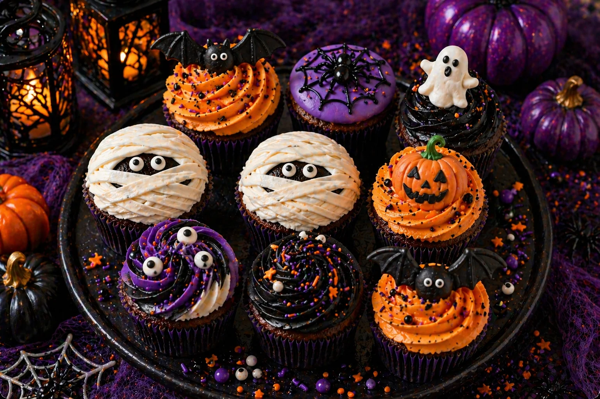

Halloween decor has a reputation for being loud — bright orange and black everywhere, plastic cobwebs, novelty inflatables. It does not have to look like that. With the right balloon garland and a considered colour palette, a Halloween party table can feel every bit as elegant as a birthday or baby shower setup, while still being unmistakably Halloween.
At Little Moment Studio, our focus is balloon styling and celebration setups. We do not make cakes or cupcakes ourselves, but we know how much the dessert table contributes to the overall look of a party. This guide covers Halloween balloon and dessert table inspiration — colour palettes, four styling directions and how to pull the whole table together without it tipping into party-shop territory.
If you would like cupcakes to complete your table, our Halloween cupcake ideas guide covers two beginner-friendly designs — mummy cupcakes and orange bat swirl cupcakes — that pair beautifully with the balloon styling below.
Why Halloween Decor Is Moving Away From Novelty
Balloon styling in 2026 has shifted noticeably toward organic, asymmetrical designs built from varied balloon sizes, rather than the uniform arches and generic party-shop bunches that dominated for years. Halloween is following the same direction — hosts increasingly want a table that photographs beautifully and reflects their own taste, not a set of decorations that could belong to any party.
The easiest way to achieve that is restraint. A palette of three or four colours, one metallic accent, and balloons in varied sizes clustered organically rather than uniform rows will always look more considered than mixing every traditional Halloween colour — orange, purple, green and black — into the same display.
Halloween Party Colour Palettes
Choose your colour palette before the balloons, cake or sweet treats. These four directions all read clearly as Halloween while staying well away from novelty-shop territory.
Classic Black & Gold
Black, metallic gold and ivory. Sophisticated and timeless — works for family or adult parties alike.
Spooky Boho
Blush pink, sage green and terracotta orange. Soft, family-friendly and unmistakably premium.
Enchanted Forest
Moss green, lavender and soft orange. Magical and woodland — a witchy alternative to classic black.
Warm Cosy Halloween
Burgundy, rust and cream with gold. Autumnal and inviting — feels closer to a harvest table than a spooky one.
Idea 1: Classic Black & Gold Halloween Table
Black and gold is the most reliably elegant Halloween direction, and the easiest to get right. The trick is proportion — black should dominate the garland, with gold used sparingly as an accent rather than mixed in equally, and ivory or white balloons used to soften the palette so it does not read as too formal or funereal.
| Element | Black & Gold Table Idea |
|---|---|
| Balloon garland | Black as the dominant tone, ivory for softness, gold as an accent (around 20%) |
| Backdrop | Organic garland arch or a simple black and gold balloon cluster either side of the table |
| Cake | Black buttercream or fondant cake with a drip finish in gold or ivory |
| Cupcakes | Orange bat swirl cupcakes and mummy cupcakes — see our Halloween cupcake guide |
| Table linen | Black or deep charcoal linen with gold cutlery or accents |
| Props | Gold candlesticks, black lanterns, a few dried stems rather than plastic decorations |
Balloon tip
Confetti balloons — clear balloons filled with gold foil confetti — add shimmer and movement to a black and gold garland without needing extra metallic balloons. Two or three worked through the design go a long way.
Idea 2: Spooky Boho Pastel Table
Spooky boho is the softest and most distinctive Halloween direction — blush pink, sage green and terracotta orange in place of traditional bright orange and black. It has become one of the most requested Halloween palettes for family parties because it photographs beautifully, suits a wide age range and never tips into anything frightening for younger guests.
| Element | Spooky Boho Table Idea |
|---|---|
| Balloon garland | Blush, sage and terracotta with a scattering of small ivory balloons |
| Backdrop | Organic garland with dried pampas grass or dried florals woven through |
| Cake | Terracotta or sage buttercream cake with a soft ghost or smiling pumpkin topper |
| Cupcakes | Pastel pumpkin swirl cupcakes or soft ghost cupcakes in blush and sage |
| Table styling | Neutral linen, dried florals, mini pumpkins in matching terracotta and sage tones |
| Props | Painted or muted-tone mini pumpkins rather than bright orange plastic ones |
This is the palette we recommend most often for children's Halloween parties and toddler celebrations — it gives you the shapes and characters of Halloween (ghosts, bats, pumpkins) without needing a single traditional Halloween colour in the mix.
Idea 3: Enchanted Forest Witchy Table
An enchanted forest table leans into moss green, soft lavender and warm orange for a magical, woodland-witch feel rather than a classic spooky one. It works particularly well alongside dried botanicals, wooden props and candlelight, and suits parties themed around witches, potions or autumn woodland rather than ghosts and skeletons.
| Element | Enchanted Forest Table Idea |
|---|---|
| Balloon garland | Moss green, lavender and soft orange with a dried floral accent |
| Cake | Moss green buttercream with a small cauldron or mushroom topper |
| Cupcakes | Mushroom or toadstool cupcakes in moss and cream tones |
| Props | Wooden crates, dried branches, mini cauldrons, amber glass jars and candles |
| Lighting | Warm string lights or candles rather than neon or purple uplighting |
Two More Directions Worth Considering
Pastel Witch Table for Toddlers & Little Ones
For very young children, a pastel witch theme softens Halloween even further — pastel witch hats, oversized paper lollipops and gentle, friendly ghost and bat shapes in the spooky boho palette above, without any dark lighting, cobwebs or skull imagery. It keeps the celebration recognisably Halloween while staying completely toddler-appropriate.
Warm Cosy Halloween Table
Burgundy, rust, cream and gold moves Halloween styling closer to a harvest or autumn table than a spooky one — a good option if you want the seasonal feel without leaning into traditional Halloween imagery at all. It pairs particularly well with pumpkin-spiced treats and works nicely for adult gatherings as well as family parties.
What to Include on a Halloween Dessert Table
| Treat | Halloween Idea |
|---|---|
| Birthday or party cake | Drip cake, buttercream cake with ghost or pumpkin topper, or a naked cake with dried florals |
| Cupcakes | Mummy cupcakes, bat swirl cupcakes, pumpkin swirl or pastel ghost cupcakes |
| Cookies | Ghosts, bats, pumpkins or spider webs in a colour palette that matches the garland |
| Cake pops | Ghost or pumpkin cake pops, or plain pastel pops in the party palette |
| Sweet jars | Black, orange and gold sweets for classic tables; pastel-wrapped sweets for spooky boho |
| Savoury touches | "Graveyard dip" style layered snacks, breadstick brooms or spider crackers for older kids |
For practical advice on arranging the table itself, see our guide to how to style a dessert table for a children's party.
Halloween Balloon Ideas
The balloon garland does most of the visual work on a Halloween table, so it is worth getting the format right as well as the colour.
| Style | Best For |
|---|---|
| Organic garland | Backdrop behind the dessert table — varied balloon sizes for a natural, asymmetrical shape |
| Statement arch | Framing an entrance or photo corner |
| Confetti balloons | Woven through a black & gold or spooky boho garland for shimmer without extra colours |
| Number or letter balloons | "BOO" or a birthday age in a matching palette, worked into the garland |
| Balloon clusters | Smaller accents either side of the cake table or along a mantelpiece |
For balloon packages and availability across Sittingbourne and Kent, see our birthday balloon styling page and balloon garlands page.
Matching Balloons & Cupcakes

Mummy and orange bat swirl cupcakes — the two designs from our Halloween cupcake guide, styled here for a classic black & gold table
Our Halloween cupcake ideas guide covers two beginner-friendly designs that pair well with any of the palettes above:
| Balloon Palette | Cupcake Pairing |
|---|---|
| Classic black & gold | Orange bat swirl cupcakes — the black bat topper picks up the balloon garland's black tone directly |
| Spooky boho | Mummy cupcakes in ivory buttercream — soften the design further with a blush or sage cupcake case |
| Enchanted forest | Either design works, styled on a wooden stand with dried florals for a woodland finish |
| Warm cosy | Mummy cupcakes in ivory cases, styled alongside pumpkin-spiced treats |
For more on pulling the whole colour story together, see our guide to how to choose a colour palette for your balloon display and how to match cupcakes with your balloon display.
Your Questions Answered
What are elegant Halloween balloon colours that don't look tacky?
Black, metallic gold and ivory is the most reliably elegant Halloween combination. Soft palettes work just as well for a premium look — blush pink, sage green and terracotta orange (spooky boho), or moss green, lavender and soft orange for an enchanted forest feel. The key is limiting the palette to three or four tones and adding only one metallic accent, rather than mixing bright orange, purple, green and black together.
What is the best colour palette for a sophisticated Halloween party?
Black, gold and ivory is the classic sophisticated choice and works for both adult and family Halloween parties. For something softer and more distinctive, burgundy, rust, cream and gold feels cosy and autumnal without leaning into traditional orange-and-black novelty colours. Consistency across the balloons, cake, cupcakes and table styling matters more than the specific colours chosen.
What Halloween party theme works well for toddlers and young children?
A spooky boho or pastel witch theme works best for toddlers and younger children. Soft blush pink, sage green and warm terracotta with friendly ghost and bat shapes feel gentle rather than frightening, while still being clearly Halloween. Avoid dark lighting, cobwebs and skull imagery for very young children.
How do you make Halloween decorations look premium rather than like a party shop?
Limit your palette to three or four colours, use organic balloon garlands with varied balloon sizes instead of uniform arches, add one metallic accent colour for shine, and repeat the same tones across the balloons, cake, cupcakes and table styling. Natural textures — dried florals, wood, muted linens — also lift a Halloween table considerably compared with plastic cobwebs and bright neon signage.
Can pastel colours work for a Halloween party?
Yes — pastel Halloween palettes have become one of the most popular directions for family and children's parties. Blush pink, sage green and soft terracotta give you a recognisably Halloween feel through shapes like ghosts, bats and pumpkins rather than through bright orange and black colouring, and it suits a wider age range than traditional novelty decor.
Whichever direction you choose — classic black and gold, spooky boho pastels, enchanted forest or a warm cosy autumn table — the same principle applies: pick three or four colours, add one metallic accent, and repeat that palette consistently across the balloons, cake, cupcakes and props. That consistency is what separates a styled Halloween table from a bag of mixed party-shop decorations.
For more seasonal and celebration inspiration, see our guides to styling a children's party dessert table and the best balloon colours.
Planning a Halloween Party in Sittingbourne or Kent?
Little Moment Studio creates elegant balloon displays and celebration setups for Halloween parties across Sittingbourne and Kent. We can also recommend a trusted local cake maker to complete your dessert table.